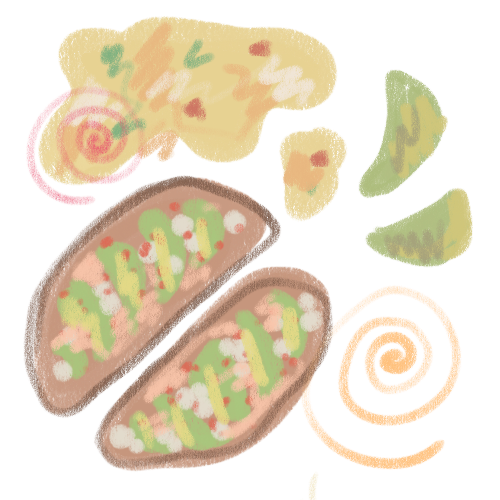
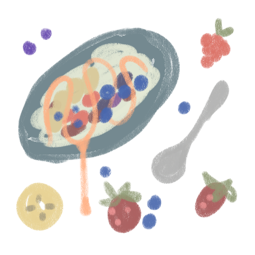
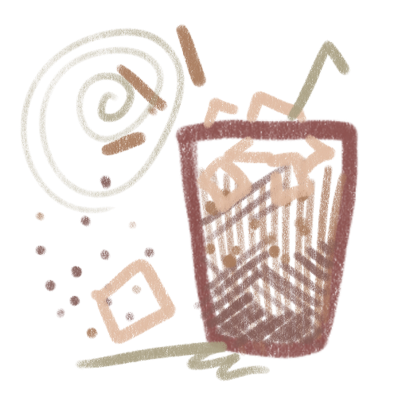
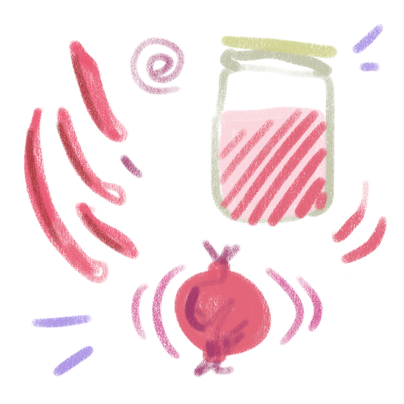

T-Day
My recipes
Tea’s Avocado Toast
I have eaten this breakfast almost every day for two years straight. I think I could still eat it every day for the rest of my life.

| 2 Slices | Sourdough Toast |
| 2 | Eggs |
| 2 | Grape Tomatoes |
| Half | Avocado |
| Spoonful | Cottage Cheese |
| Handful | Spinach |
| Handful | Pickled Red Onions (See recipe) |
| A dash | Garlic powder, tajin, paprika, lemon pepper |
- Toast the everything bagel seasoned sourdough toast from Aldi until it is a little crunchy.
- Fry the eggs over hard on a stove. Mix in sliced grape tomatoes, spinach, garlic powder, and lemon pepper while that’s cooking.
- Once the toast is done, spread the cottage cheese and sliced avocado evenly on each slice. Sprinkle the tajin and paprika on that. If you’re feeling crazy, add a little bit of hot honey too.
- Spread the egg on top and sprinkle the feta cheese on top of everything with some salt.
Berry Yogurt Bowl
I go through a handful of yogurt tubs every week. I have been trying to cut it down, but it’s so addicting. Also, it has great protein. Here is how to make it super yummy...

| 1/2 Cup | Plain Greek Yogurt |
| Drizzle | Honey |
| Sprinkle | Cinnamon |
| 1/4 | Sliced Banana |
| 1/2 Cup | Frozen mixed berries |
| 1 tbs | Peanut Butter |
- In a cute bowl, mix the yogurt and peanut butter together with a spoon until creamy.
- Place the berries on top, along with the bananas
- Drizzle honey all over the top
- Sprinkle the tiniest bit of cinnamon on top of everything
- That’s it! You could also skip the berries and dip a sliced Cosmic Crisp apple in the yogurt mix.
Tea’s Honey Brown Sugar Shaken Espresso
This is what I’ll make if I’m sick of my morning black coffee from a pod. My current bag of espresso is from Lucky Goat, a cute cafe in Tallahassee, FL. Any espresso bean will work though. I grind my beans at home to be pretty fine.

| 2 Shots | Espresso, any kind |
| 1 tbs | Honey |
| 1 tbs | Brown sugar |
| Dash | Cinnamon |
| 12oz | Milk of choice |
| 12oz | Mason jar with lid |
- Okay, first pour your honey on the bottom of your shot glasses before pulling the espresso, so that the coffee melts into the honey.
- Sprinkle the cinnamon on the inside of a jar with a lid
- Pull the honeyed shots, then stir them in the jar with the brown sugar
- Add ice and close the lid, then SHAKE!
- Fill up the remainder of the glass with milk
Pickled Onions
I pickle my own onions because I hate the ones at Kroger and I cannot find any other good ones. I will literally stick my hand in the jar and eat these straight, they are so good. These are the onions that I use for my avocado toast recipe

| 1/2 Cup | Water |
| 1/2 Cup | Distilled White Vinegar |
| 1 | Red onion |
| 1 tbs | Salt |
| 1/4 Cup | Sugar |
- I like to cut my onions in skinny little C shapes. Cut the onion in half from the top, then keep cutting outwards every centimeter or so.
- Fill an empty mason jar (I honestly use old pickle jars) with the onion slices
- Fill the rest of the jar with equal parts water and white vinegar.
- Add salt and sugar
- SHAKE really well. Shake shake shake.
- Leave in the fridge overnight and they will be ready in the morning.